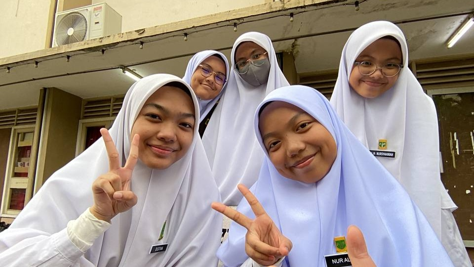

Leadership & committees
Secretary · Entrepreneur Club FSKM
Role summary
- Serve as Secretary of the Entrepreneur Club under UiTM's Faculty of Computer and Mathematical Sciences (FSKM).
- Support administration and coordination through documentation, correspondence, meeting records and information flow between committee members and stakeholders.
- Contribute to planning and delivering entrepreneurship-related activities with the executive committee.
- Strengthen organisational, communication, documentation, coordination and project-management skills.
Moments

